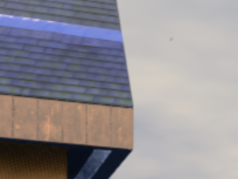
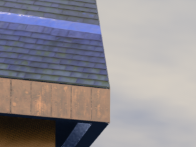
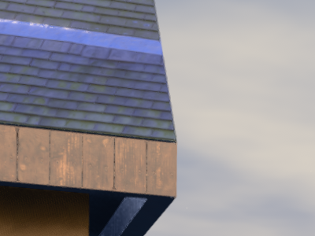
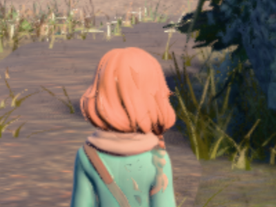
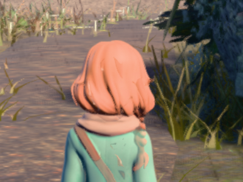
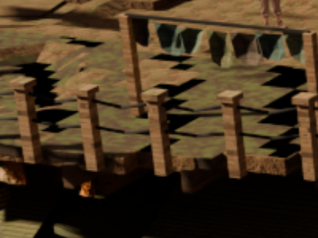
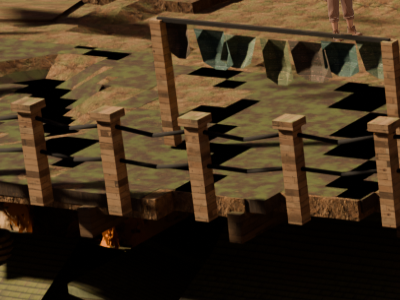

docs/plans/director-slate.md OPEN RESIDUAL 2.)public/play3d.html:163 builds its
renderer as new THREE.WebGLRenderer({antialias:true}); R.setSize(1344,768,false)
and never calls setPixelRatio, so the drawing buffer is 1344×768 forever
and CSS stretches it to the window. On a retina panel that is one rendered pixel per 2×2
device pixels. public/js/battle_stage3d.js:610 does call
renderer.setPixelRatio(Math.min(window.devicePixelRatio||1, 2)) — which is exactly
why the battle screen is sharp and the field is not.
stylized.png and every
per-camera bg.png in public/assets/scenes/*/ measures
2688×1536 — precisely twice the canvas. Today's shipped setting downsamples the
pre-rendered art to half its authored resolution before the player ever sees it. The detail
is on disk and is being thrown away every frame.How these were captured. docs/qa/dpr/dpr_shots.mjs
(through tools/cdp.mjs: OS-assigned port, own profile prefix, reaped).
One headless Chrome on the real GPU (ANGLE Metal Renderer: Apple M1 Max) driven at
Emulation.setDeviceMetricsOverride deviceScaleFactor: 2, css viewport 1344×756, so
every frame below is 2688×1512 real device pixels — what a retina screen actually shows.
The pixel ratio is applied at runtime through the page's own top-level bindings
(R, and PFXRIG.composer for the post-fx path, whose render target is
also built at 1344×768 and has to be resized with it; GTAO's ao_res 0.5 ratio is
preserved). Nothing under public/ was edited — this is a capture, not a fix.
Console clean on every run. Drawing buffers confirmed per shot: 1344×768 · 2016×1152 · 2688×1536.







The nine full frames are shipped as quality-95 4:4:4 JPEG (46 MB of PNG became 14 MB); measured on the crop regions the encode moves acutance by +1.5 to +2.9% uniformly across all three settings, against a dpr 1 -> dpr 2 gap of +62%, so it cannot flatter or flatten the comparison. Every crop is lossless PNG — the crops are the evidence.
Acutance = mean absolute neighbour difference on luminance over the crop. A
proxy for iteration only; the pictures are the verdict.
10 s settled rAF window per setting, headless Chrome on the real GPU
(Apple M1 Max, ANGLE Metal), first 5 frames dropped. docs/qa/dpr/fps.json carries
all three runs.
UNCAP=1)The only run that can tell 61 fps from 119 fps apart: with vsync on, every frame time quantises to 8.3 / 16.6 / 25 ms and the table says nothing about headroom.
| viewpoint | dpr | median ms | p95 ms | median fps | p5 fps | 60 fps? |
|---|---|---|---|---|---|---|
| ow-valley (real-time + GTAO) | 1 | 3.8 | 5.2 | 263 | 192 | yes |
| ow-valley | 1.5 | 7.6 | 8.5 | 132 | 118 | yes |
| ow-valley | 2 | 12.7 | 13.3 | 79 | 75 | yes — 12.7 of the 16.7 ms budget, 24% spare |
| del-cine lockhead (plate) | 1 | 3.5 | 4.7 | 286 | 213 | yes |
| del-cine lockhead | 1.5 | 3.7 | 4.8 | 270 | 208 | yes |
| del-cine lockhead | 2 | 3.8 | 4.9 | 263 | 204 | yes — +9% frame time, i.e. free |
| viewpoint | dpr | median fps | p5 fps | reading |
|---|---|---|---|---|
| ow-valley | 1 | 120 | 118 | locked 120 |
| ow-valley | 1.5 | 120 | 112 | locked 120 |
| ow-valley | 2 | 61 | 39 | drops to a locked 60; ~5% of frames land on a 25 ms hitch |
| del-cine lockhead | 1 / 1.5 / 2 | 120 | 100 | unchanged at every setting |
This is the honest cost to a ProMotion user: the overworld goes from 120 fps to 60 fps. On a 60 Hz TV — the couch-co-op target this game is built for — nothing changes: 12.7 ms fits inside 16.7 ms and the overworld holds 60 at every setting.
Machine state, disclosed: the first run was taken while another lane's
Blender emberbrook --glb export held the CPU and swap sat at 32.8/33.8 GB. It was
re-measured after that export finished (swap 5.5/7.2 GB): the plate rows were identical and
ow-valley dpr 2 moved 65 → 61 median fps, i.e. the load did not change any verdict. Both runs
are in fps.json.
One line of code (R.setPixelRatio(Math.min(devicePixelRatio||1, 2)), plus
building the post-fx render target at the same ratio — the composer's target is hard-coded to
1344×768 and would otherwise silently cap the whole real-time path back to today's resolution).
What it buys: every rendered edge stops being two device pixels wide, and the pre-rendered plates — already authored at 2688×1536 and currently downsampled to half — are shown at their real resolution for the first time. The town scenes gain the most, because the plate is the picture there.
What it costs: nothing measurable in plate scenes (+9% frame time). In the overworld, 3.3× the frame time: 12.7 ms of a 16.7 ms budget on an M1 Max. 60 fps holds; 120 fps does not.
The knob if 2 is too expensive elsewhere: 1.5 costs 7.6 ms in the overworld (locked 120 fps) and buys roughly half the sharpening — clearly better than 1 in every crop above, clearly short of 2. It is a real middle setting, not a compromise that pleases nobody. But it does not line the plates up 1:1, which is where most of the town gain comes from.
Instrument: docs/qa/dpr/dpr_shots.mjs ·
node docs/qa/dpr/dpr_shots.mjs (server on :3000) ·
FPS_ONLY=1 UNCAP=1 node … for the cost table alone.
{kind=link}
{kind=link}
{kind=link}
{kind=link}
{kind=link}
{kind=link}
{kind=link}
{kind=link}
{kind=link}
{kind=link}
{kind=link}
{kind=link}
{kind=link}
{kind=link}
{kind=link}
{kind=link}
{kind=link}
{kind=link}
{kind=link}
{kind=link}
{kind=link}